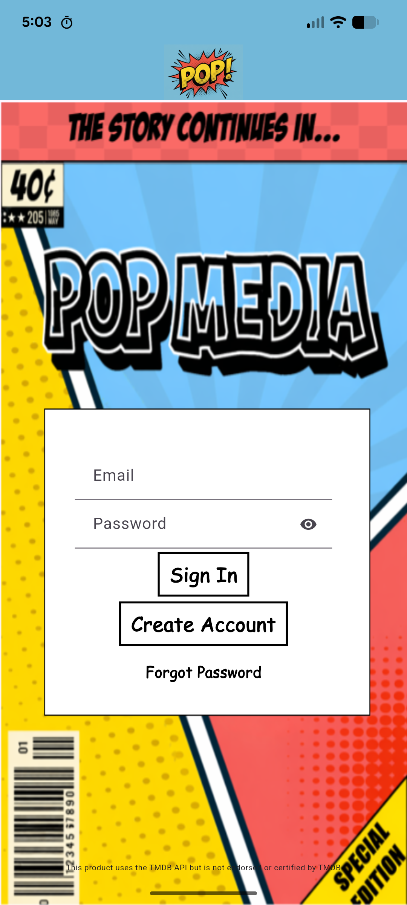
Login Page
If you don’t have an account, click Create Account to navigate to a new page and get started with PopMedia, otherwise enter your details and click Sign In, or click Forgot Password to receive a password reset email.
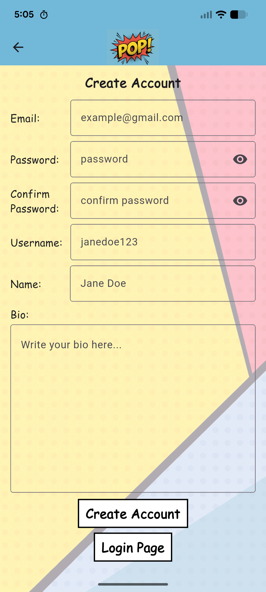
Create Account
Enter details for your new account and click Create Account to confirm or click Login Page to navigate back to the login screen.
Upload Page
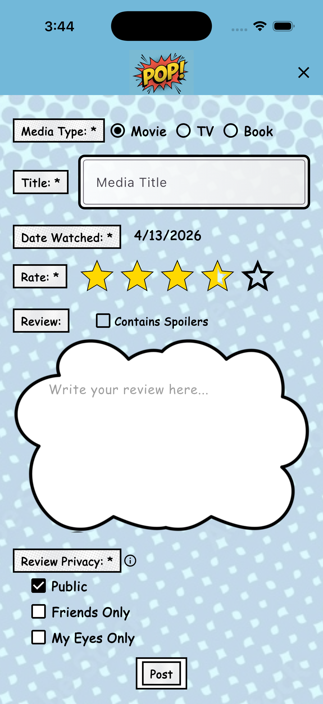
You can navigate to this page by clicking the center button on the navigation bar. The required components of your review are marked with a *. If you navigate away from this page, you will be prompted “Are you sure?” to prevent losing your progress.
Media Type Selector
On the upload page you should first select the media type at the very top (this will control what search results appear in the search box)Media Search
In this box, search the title of the media you want to upload a review for and select it from the drop downDate Watched
Tap on the date to open up the date selector, here you can pick when you consumed this media.Review
Click on the stars to set your rating of the media, then fill out the text box with your thoughts on the media (tick the spoilers box if your review gives away critical plot points!)Privacy Selector
Your selection here controls who will be able to view your review: Public: any PopMedia user. Friends Only: only mutual followers. My Eyes Only: only you.Post Button
Submit your review and post it to your account.Home Page
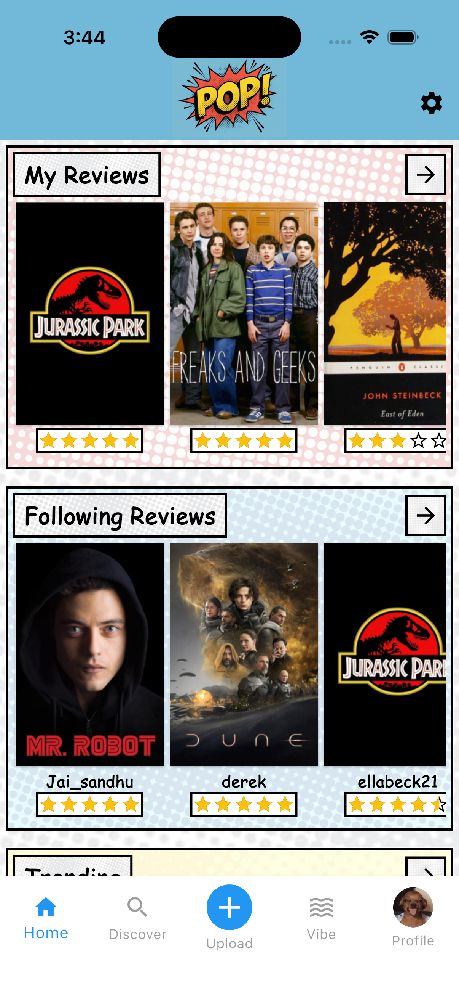
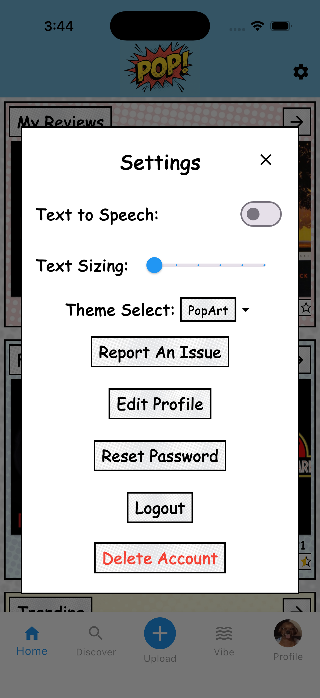
You are automatically directed to the Home Page after logging in and after uploading a review. You can also access it from the navigation bar.
The Home Page contains three horizontally scrollable sections. Each section has a forward arrow that takes you to a related Grid Page.
Settings PopUp
Toggle accessibility features, customize your theme and profile or manage account/session settings. Reports can be made from the settings popup, specific review pages, and even profile pages.These reports are reviewed and resolved by popMedia administrators.
My Reviews
Displays your uploaded reviews from most recent to least recent based on the upload date. Each review is clickable and opens the Single Review Page.
Following Reviews
Displays reviews from people you follow in chronological order. You will only see public reviews, or friends-only reviews if you are mutual friends. Each review opens the Single Review Page.
Trending
Displays trending media on the application, showing items that have been reviewed most frequently in the recent past. Each item opens the Overview Page.
Single Review Page
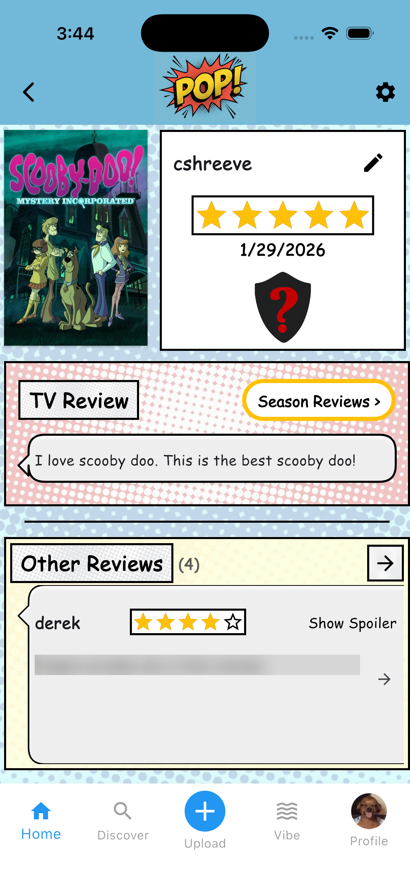
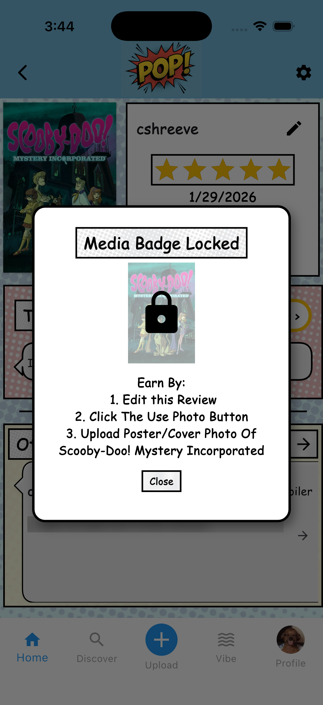
This page shows one full review. In the top right, you will see the username, star rating, date, and badge. Below that is the review text, and if the review is for television, a Season Reviews button appears.
In the very top right corner, you will either see a red flag for reporting someone else’s review or a pencil icon for editing your own review.
Media Badge
The badge may show a question mark or the media cover image. A question mark means the badge is locked. If you click on it you can see how to unlock it. A cover image means the badge has been earned and can be clicked to see how it was unlocked.
Editing
When editing, a green checkmark and red trashcan appear. You can update the rating, review, date, spoilers, privacy, and photo (from files on web, photo library on ios, or camera on android). Clicking the checkmark saves the review, while the trashcan deletes it.
Other Reviews
At the bottom is a horizontally scrollable section with other reviews for the same media. These appear in this order: friends, people you follow, public users, then external sources like TMDB or IMDb. In the parenthesis you will see a count of the total number of other reviews for the type of media. A forward arrow expands the section vertically.
Season Review Page
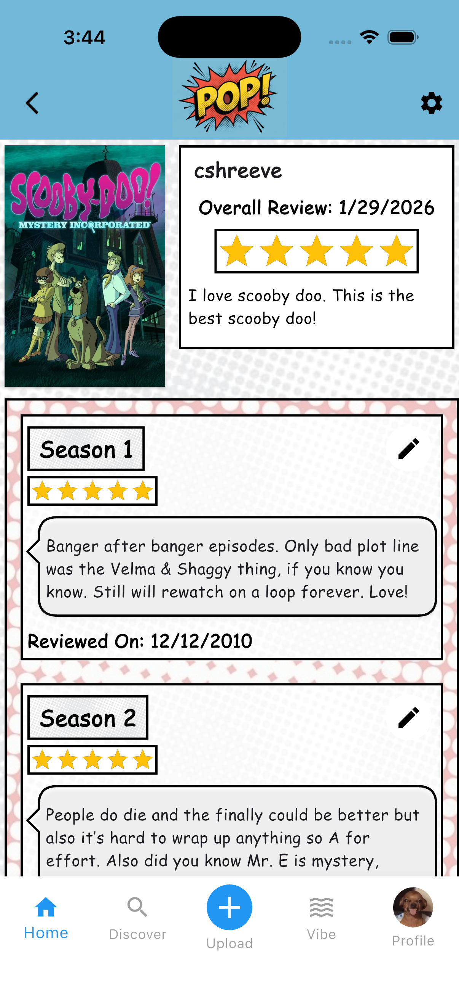
This page is only available from a television review and shows season-by-season reviews for that show. The original television review appears in the top right corner.
Each season can show a rating, review text, date, and spoilers. If it is your own review, you can edit each season review directly.
Editing
When editing, a green checkmark and red trashcan appear. Use the checkmark to save changes or the trashcan to delete the season review.
Grid Pages
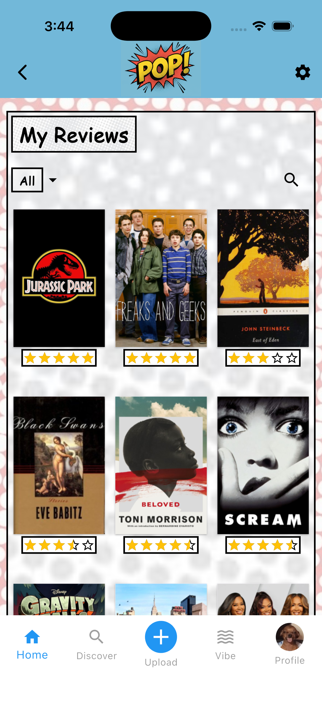
Grid Pages display a grid of items such as reviews, media, badges, playlists, or users. If there are no items, the page shows “No items found.” Every item is clickable and leads to the related page or popup.
My Reviews, Following Reviews, Trending Media, and Recommended Media include a filter box for books, movies, television, or all. My Reviews, Following Reviews, Friends, and Playlists include a search button. Trending and Recommended pages also include a wheel selector.
The Playlists grid includes an Add New Playlist button that opens the create playlist page.
Search Button
The search button lets you search media titles, playlist titles, usernames, and names depending on the grid you are viewing.
Overview Page
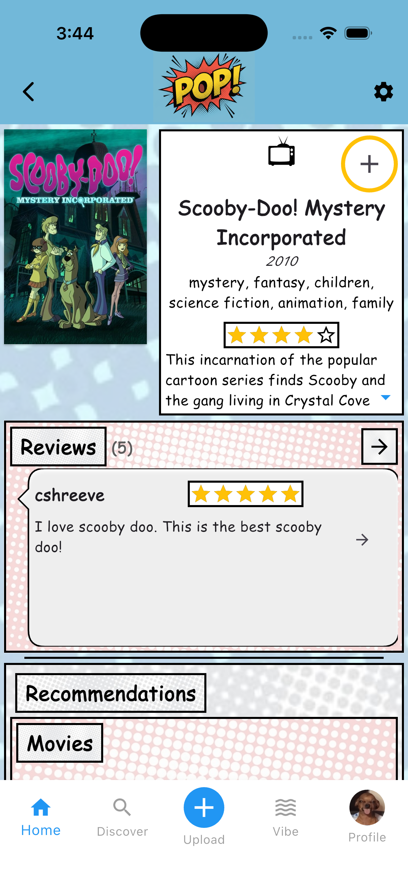
This page appears when you click on a piece of media. It shows details such as media type, title, year released, genres, creator, overall star rating, and summary.
In the top right, the plus icon lets you upload a review or add the media to a playlist.
Reviews
Below the media information, you can view reviews for that media. Spoilers are blurred until you click “Show Spoilers.” A right-facing arrow on each review opens the Single Review Page.
Recommendations
This section shows similar recommended media, separated into books, movies, and television. Clicking an item opens its Overview Page.
Profile Page
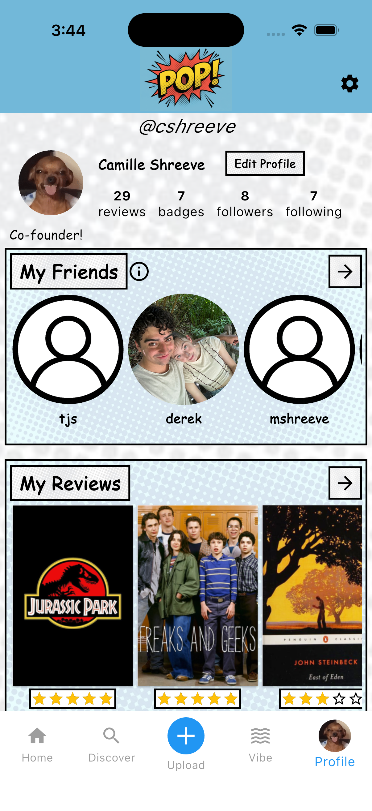
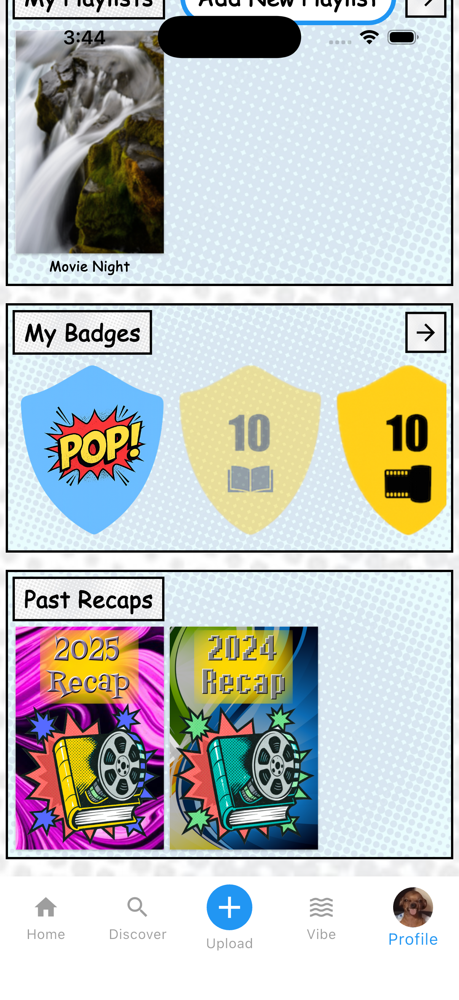
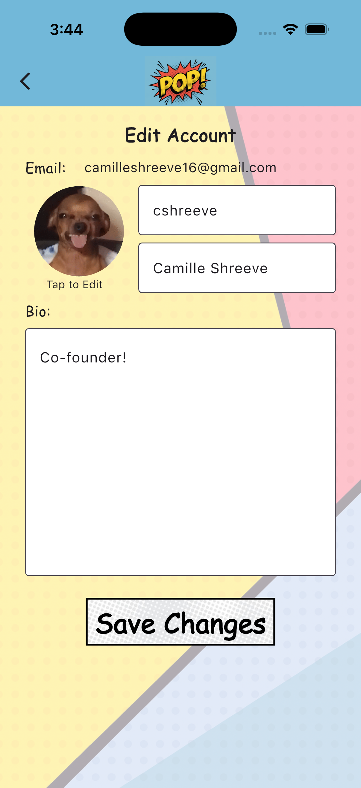
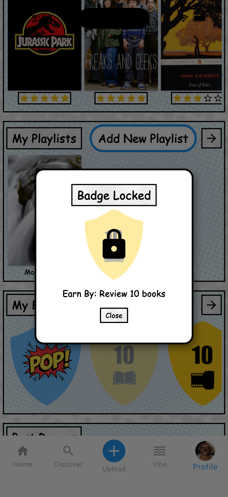
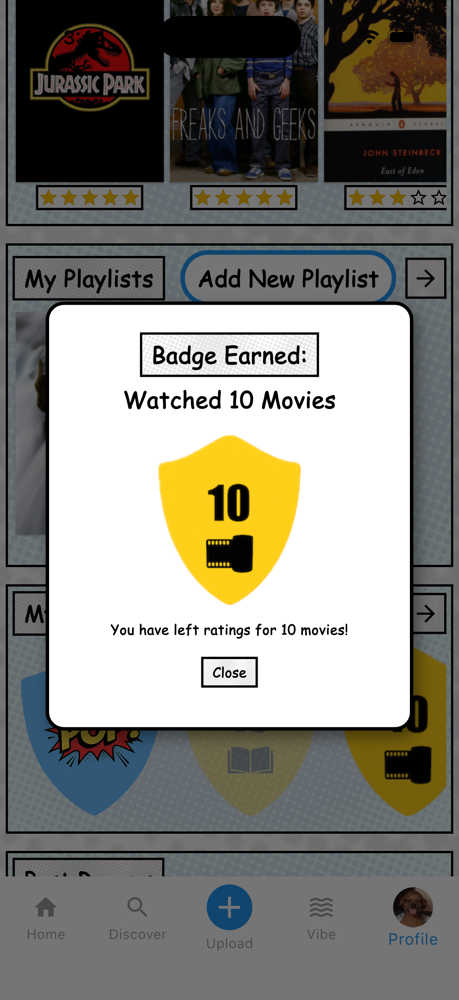
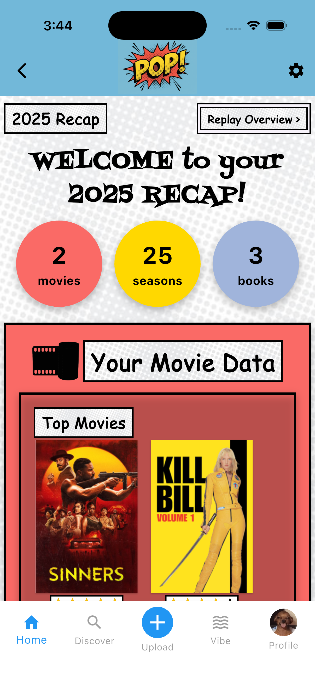
Account Information
At the top of your profile, you can see counts for that users reviews, badges, following, and followers. Clicking any count opens the related page. If you are viewing another user’s profile, you will see a follow or unfollow button.
Edit Account
On your own Profile page the Edit Profile button will be available and it lets you change your profile picture, username, name, and bio.
Friends
Below the account information, you can see friends. Friends are users who follow you and are followed back by you. Clicking a friend’s icon opens their Profile page.
My Reviews
That users reviews are listed from most recent to least recent. On your own profile page you will see all your reviews but on anothers you will onky see the ones you have access to based on the reviews privacy level.
Playlists
This section shows the public playlists that user created or collaborated on (or all playlists if it is your own profile). Clicking a playlist opens the Single Playlist Page.
My Badges
You can see badges you have earned and badges you still need to unlock. Clicking a badge shows a popup explaining how to earn it.
My Recaps
This section only appears on your own profile page. Annual recaps are listed by year. Clicking one opens your Recap Page for that year, which includes graphs, podiums, and stats about your favorite media and creators.
Single Playlist Page
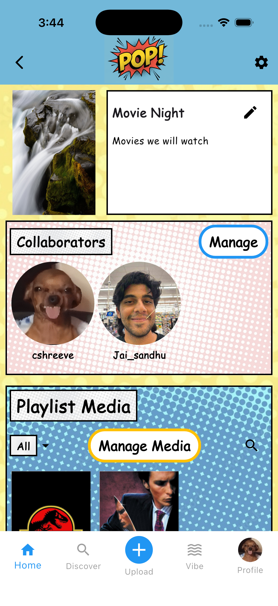
This page shows the information about a playlist including its cover image, name, and description.
If you are a collaborator on this playlist there will be an edit button in the very top right corner which you can use to edit the privacy, image, name, and description or delete the playlist entirely if you are the original owner.
Collaborators
Here you can see first the owner then all the current collaborators. Use the Manage button to add or delete collaborators (you cannot delete the original owner).
Playlist Media
Here you can see all of the media in this playlist. You can filter by type or search by title. Use the Manage Media button to add or delete media.
Discover Page
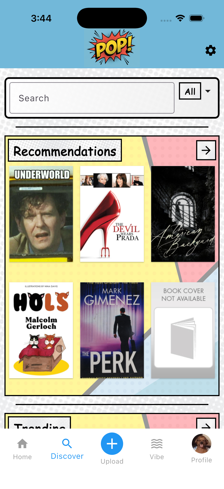
The Discover Page is reached from the second icon in the main navigation bar. It lets you search media, view recommendations, check trending media, and access Vibe Search.
Search
Use the search bar to search for media, users, and playlists. The filter in the search bar can narrow results by All, Users, Playlists, Books, Movies, or TV Shows.
Recommendations
This section shows recommendations based on your full profile. New reviews update the recommendations automatically. The arrow opens a recommendation grid with filtering and wheel selection tools.
Trending
This section provides another way to view trending media.
Vibe Search
The Vibe Search button opens the Vibe Search Page.
Vibe Search Page
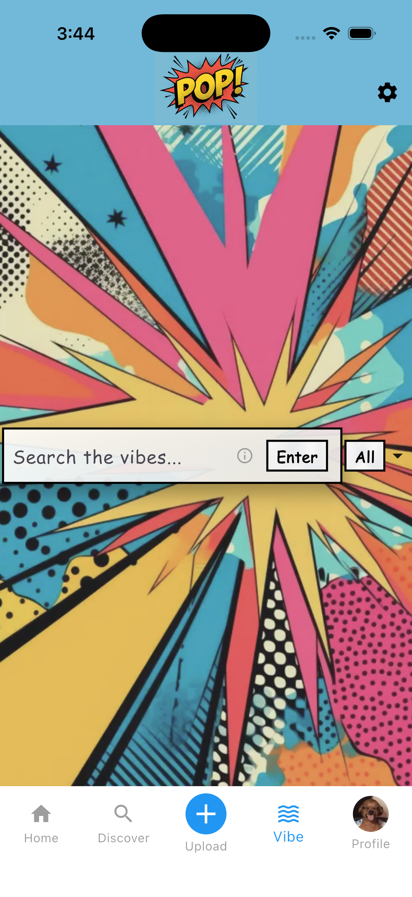
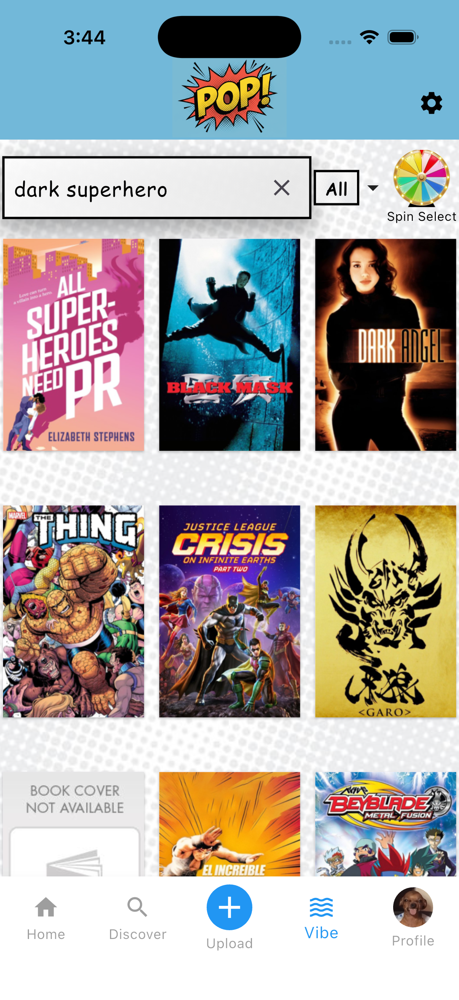
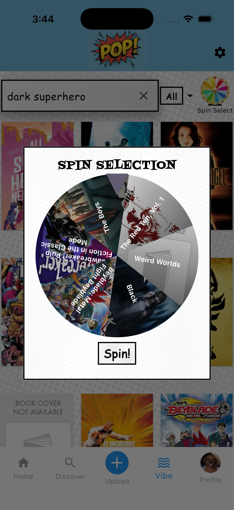
On the Vibe Search Page, you can search by mood or meaning instead of exact titles. For example, a search like “dark and moody superhero” may return The Batman.
The search can be limited by media type using the filter beside the search bar. Results appear in a scrollable grid, and each item opens its Overview Page.
Wheel Select
The Wheel Select icon appears on the Recommendations Grid, Trending Grid, and Vibe Search Page. It randomly chooses one of six pieces of media from the grid, then shows a popup with the selection.